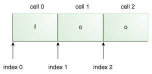

La forma más básica de correspondencia de patrones soportada por esta IPA es la correspondencia de una cadena
literal. Por ejemplo, si la expresión regular es foo y la cadena de entrada es foo, la
correspondencia será exitosa porque las cadenas son idéntcias. Inténtelo con el programa de pruebas:
Introduzca su expresión regular: foo
Introduza la cadena de entrada donde buscar: foo
He encontrado el texto foo empezando en el índice 0 y terminando en el índice 3.
Esta correspondencia fue un éxito. Note que mientras la cadena de entrada es de 3 caracteres de longitud, el índice de inicio es 0 y el índice de finalización es 3. Por convención, los rangos incluyen el índice de principio y excluyen el índice final, como es mostrado en la siguiente figura:

La cadena literal foo, con las celdas numeradas y los valores de los índices.
Cada carácter en la cadena reside en su propia celda, con las posiciones del índice apuntando entre cada celda. La cadena "foo" empieza en el índice 0 y termina en el índice 3, aunque los propios caracteres sólo ocupan las celdas 0, 1, y 2.
Con las coincidencias siguientes, notará algún solapamiento, el índice de inicio para la próxima coincidencia es la misma que el índice final de la coincidencia previa:
Introduzca su expresión regular: foo
Introduza la cadena de entrada donde buscar: foofoofoo
He encontrado el texto foo empezando en el índice 0 y terminando en el índice 3.
He encontrado el texto foo empezando en el índice 3 y terminando en el índice 6.
He encontrado el texto foo empezando en el índice 6 y terminando en el índice 9.
Esta IPA también soporta una variedad de caracteres especiales que afectan a la forma en que un patrón es
correspondido. Cambie la expresión regular a cat. y la cadena de entrada a cats. La
salida aparecerá como sigue:
Introduzca su expresión regular: cat.
Introduza la cadena de entrada donde buscar: cats
He encontrado el texto "cats" empezando en el índice 0 y terminando en el índice 4.
La correspondencia aún se da, incluso aunque el punto "." no está presente en la cadena
de entrada. Tiene éxito porque el punto es un metacarácter — un carácter con significado especial
interpretado por el matcher. El metacarácter "." significa "cualquier carácter" por lo cual
es porque la correspondencia se da en este ejemplo.
Los metacaracteres soportados por esta IPA son: <([{\^-=$!|]})?*+.>
@ y # nunca tienen un
significado especial.
Hay dos formas de forzar a un metacarácter a ser tratado como un carácter ordinario:
\Q (la cual empieza el entrecomillado) y \E (que lo termina).
Cuando use esta técnica, los \Q y \E pueden ser colocados en cualquier lugar de la
expresión, siempre que \Q vaya primero.